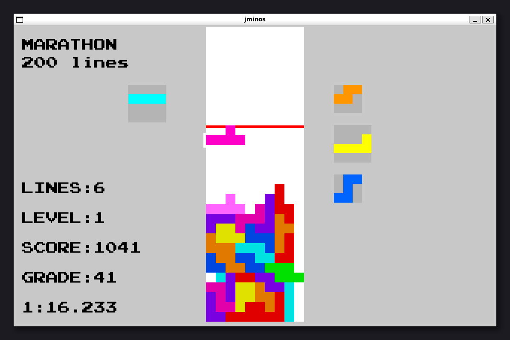
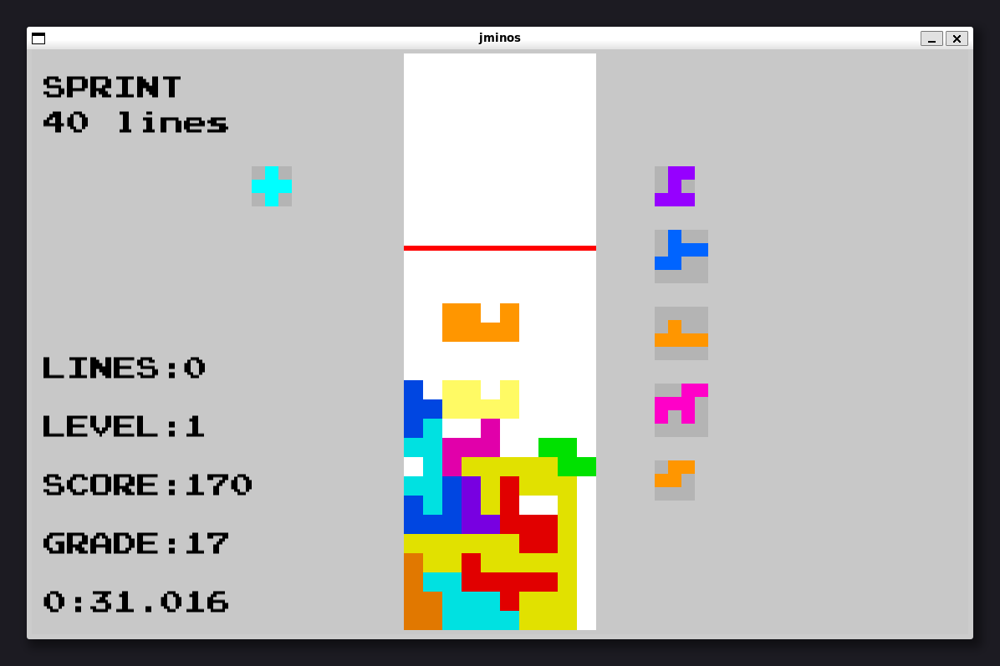
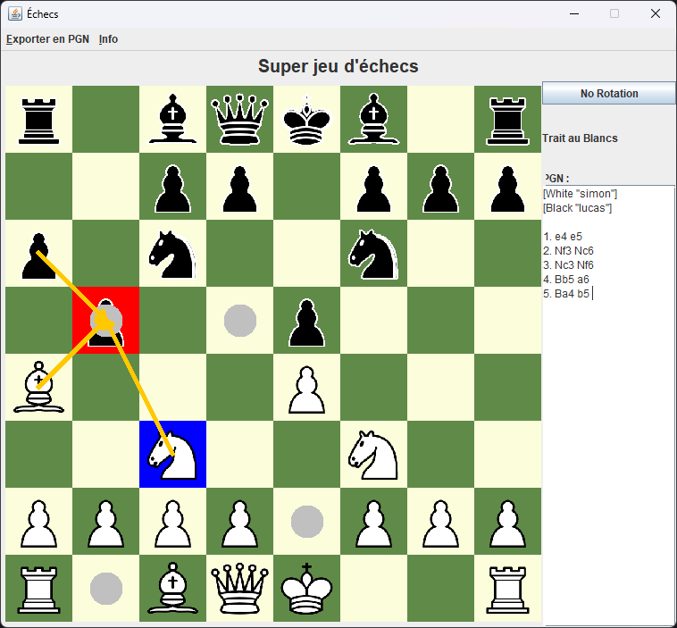
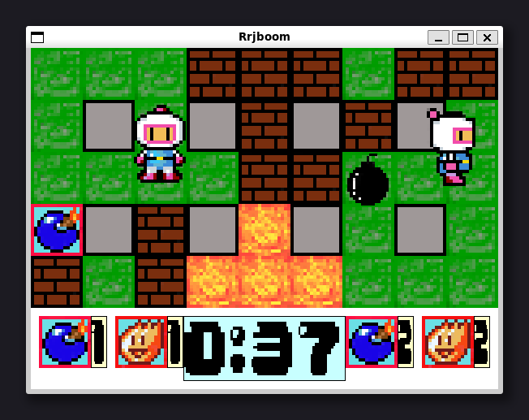
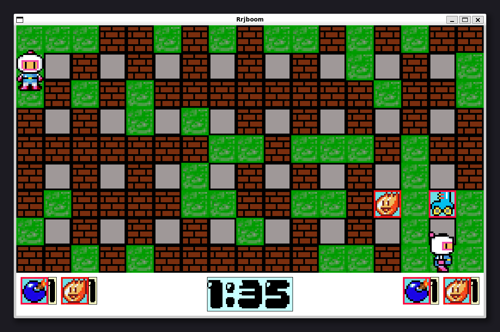

Tetris-like avec des pièces de n'importe quelle taille.
Technologies : C++, SFML3, xmake


Jeu d'échecs supportant 2 joueurs humains ou ordinateurs, la variante 960, et le jeu de dames.
Technologies : Java, Swing, MVC, Decorator

Site web parodique montrant diverses statistiques sur la mort.
Technologies : PHP, Symfony, Scrum
Application en ligne de commande permettant de créer et résoudre des sudokus et des multidokus selon plusieurs méthodes.
Technologies : Java, POO, UML
Compilateur de C en ASM (tout deux simplifiés pour les besoins du cours).
Technologies : Java, ASM, ANTLR4, Visitor
Bomberman-like à 2 joueurs humains, supportant différentes tailles de terrain et plusieurs bonus.
Technologies : C++, SDL2, cmake

